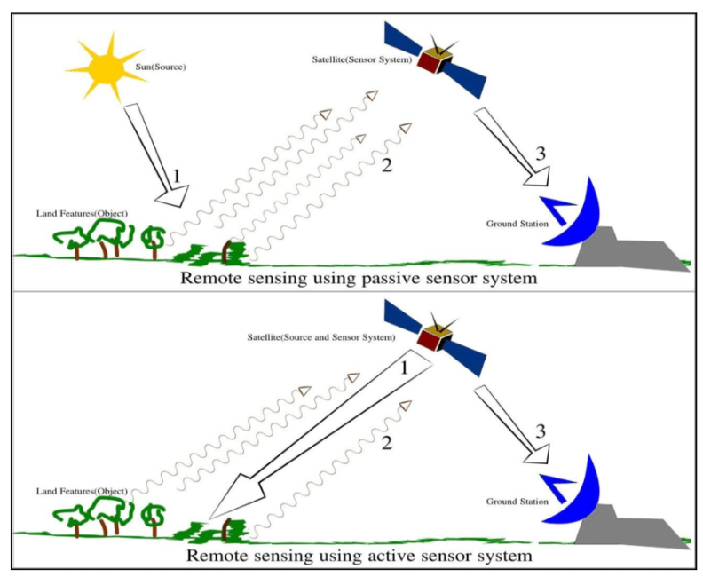
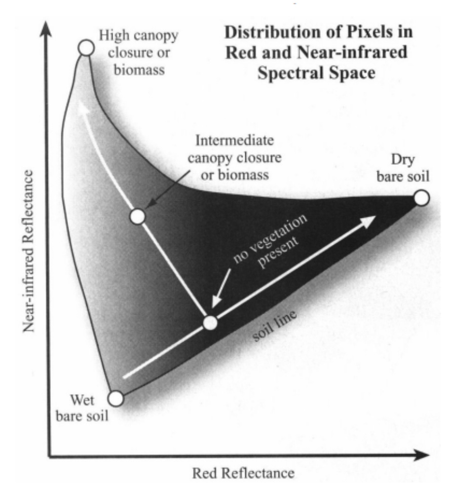

1 Week 1: Introduction to Remote Sensing
1.1 Summary
1.1.1 Sensor
- Passive (human eye, camera, satellite sensor)
Use available energy (reflected sun energy)
Emit nothing
Energy is in electromagnetic waves
- Active (Radar, X-ray, LiDAR)
Have an energy source for illumination
Actively emits electormagentic waves and then waits to receive (Synthetic Aperture Radar (SAR) collects at longer wavelength that can pass through clouds)

1.1.2 Electromagnetic radiation (EMR)
1.1.2.1 Terms
EMR: Waves of an electromagnetic field, travel through space and carry radiant energy
Electromagnetic wave: part of the EMR spectrum, EMR propagates as waves
Radiant flux: Energy per unit of time
1.1.2.2 Interacting with earth’s surface
- Surface
Absorb energy
Transmit energy
- Atmospheric: its particles scatter energy
- Rayleigh = particles are very small comparered to the wavelength —- atmosphere
The longer the wavelength is, the longer its light scatter reach (e.g. sky color)
The more it scattered, the deeper color it shows (e.g. shallow water vs deeper ocean)

Mie = particles are the same size compared to the wavelength
Non selective = particles are much larger than the wavelength
1.1.2.3 Polarization
Single: same polarization transmitted and received
Dual: One sent, different one received
HH = emitted in horizontal (H) and received in horizontal (H)
- Quad polarization: system can transmit and receive four types
1.1.3 Data
Formats: raster
Resolutions
Spatial resolution
Spectral resolution: how many surface acrossed visible spectrum.
Ture color: what human see

Radiometric resolution
The higher the bit, the more information (light or reflectance)
Temporal resolution
The revisit time of the sensor (how often)
- Jargon
Digital number(DN): raw data
Radiance: fixical data, also called Top of Atmosphere (TOA) radiance
Reflectance: measuring the property of a material, remove the effects of the light source in radiance
Band 4: red (vegetation absorbs)
Band 8: Near-infrared (NIR, that vegetation strongly reflects)
high values of NIR and low values of red: dense vegetation
low values of both red and NIR: wet bare soil.

1.2 Application of satellite imagery
Satellite remote sensing imagery is the most common remote sensing data used in regional science research in urban settings (Patino and Duque 2013). And Landsat imagery is one of satellite remote sensing data with consistent medium resolution.
It collects data at each point on Earth each every 16 days (temporal resolution) in a raster grid composed of 30 by 30 m cells (spatial resolution).
Here are several research areas of its application.
1.2.1 Quality of life index assessment
An evaluation of the quality of life of the urban population is important to support decision making and sustainable urban management and planning and to measure policy outcomes, which takes into account not only socio-economic information about people but also information on the geographical context and environmental conditions of urban areas (Craglia et al. 2004).
Various indices of quality of life, residential quality, attractiveness and a housing index have been estimated using remotely sensed data from Landsat MSS, TM, ETM+, and SPOT sensors and complementary data from censuses and surveys on housing size and value, population density, income and education.
Lo (1997) and Lo and Faber (1997) used Landsat TM images combined with census data to assess the quality of life in Athens-Clarke County, Georgia, using image processing techniques and information overlay in GIS, which provides a reproducible approach for future researchers. The environmental variables extracted from the image data were land-use/land-cover as a percentage of urban use, vegetation as a normalized difference vegetation index (NDVI), and apparent surface temperature. The socio-economic variables extracted from the census data included population density, per capita income, median home value and percentage of college graduates. These data layers are integrated by principal component analysis and GIS overlay.
1.2.2 Urban growth analysis
Urban growth trends can be detected easily using medium spatial resolution satellite images, such as SPOT and Landsat TM, taking advantage of the very different spectral properties of urban manmade structures versus rural spaces.
Madhavan et al. (2001) used Landsat TM images to measure and analyze the spatial growth of the Bangkok metropolitan area of Thailand.
1.2.3 House value estimation
House prices have been estimated using data from Landsat MSS, TM, ETM+ and ASTER sensors as well as complementary data from censuses and surveys of house structural attributes, population density, income, and distance to a central business district.
Yu and Wu (2006) used a Landsat ETM+ image for house value modeling in Milwaukee, Wisconsin. They integrated environmental characteristics derived from the remotely sensed image with house structural attributes to model house values using two different techniques: global ordinary least squares regression and a regression tree approach. The environmental characteristics derived from the image were the fractions of vegetation, impervious surface and soil, using the normalized spectral mixture analysis.
1.2.4 Urban population estimation
An understanding of the population size and spatial distribution in urban areas is essential for social, economic and environmental applications.
Harvey (2002) used a Landsat TM image and census data for Ballarat and Geelong, Australia, to allocate population estimates to each pixel of the image and overcome the problem of spatial aggregation of census data.
1.3 Reflection
1.3.1 The importance of remote sensing
Environmental monitoring: Remote sensing can be used to monitor the environment and assess changes in land use, vegetation cover, water resources, and atmospheric conditions. This information is important for managing natural resources, predicting natural disasters, and understanding the impacts of climate change.
Mapping and planning: Remote sensing data can be used to create accurate maps and support planning and development activities. For example, remote sensing can help identify suitable sites for new infrastructure or monitor urban growth.
Agriculture: Remote sensing can help farmers optimize crop management by providing information about soil moisture, crop health, and yield potential. This information can help reduce water and fertilizer use and increase crop productivity.
Disaster management: Remote sensing can be used to support disaster management by providing information about the extent and severity of natural disasters such as floods, earthquakes, and wildfires. This information can help emergency responders prioritize their efforts and allocate resources effectively.
National security: Remote sensing can be used for intelligence gathering and monitoring of military activities. Satellites equipped with high-resolution cameras and other sensors can detect and track movement of troops, weapons, and other military equipment.
1.3.2 Remote sensing for planning
Remote sensing can make the field research easier, in terms of learning the land use conditions and building information, which is an important part before doing a planning project.
Remote sensing can also lead to a reasonable and effective planning with urban population estimation, life quality assessment and house value estimation.
Research on urban setting related to remote sensing usually need to use comprehensive types of data, such as census data and satellite imagery.
There is a combine usage of statistics analysis approach and spatial analysis approach in related research, such as principal component analysis, global ordinary least squares regression and GIS overlay.
1.3.3 Future research
It is still undetermined on the question of how to use the indicators and information that those analysis of remote sensing data provide (Li and Weng 2007).As with the relationships between society system and ecology system, local research and knowledge must be considered for the application of analysis results in policy making, urban planning and management.